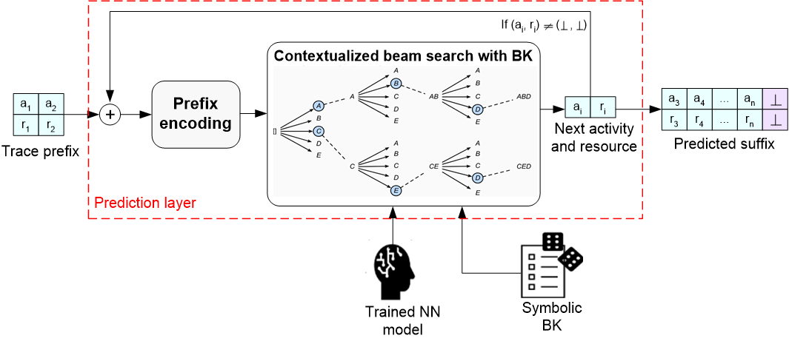

NeSy suffix Prediction steps:
1
Encoding: Encode the prefix using the encoding method applied during training.
2
BK-contextualized prediction: Perform beam search to guide suffix prediction by combining neural network probabilities with background knowledge compliance.
3
Return the top compliant suffix that reaches termination.
